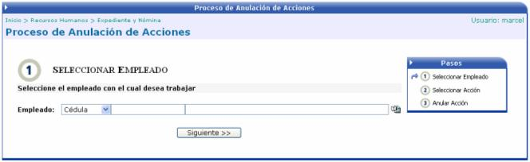
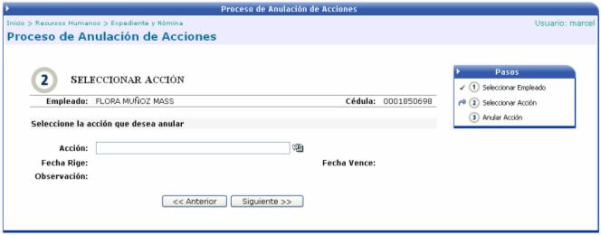

Este proceso anula acciones que fueron aplicadas a un empleado por error y que le corresponden a otro (s) empleado (s) de la empresa.
Los pasos a seguir son:
a) Seleccionar el Empleado:

b) Seleccionar la Acción:
Las acciones que se muestren en la pantalla emergente de “Lista de Acciones”, serán aquellas que no tengan ninguna relación con la línea del tiempo, o sea aquellas que no calculen retroactivo. Si la ventana emergente no contiene información, es porque las acciones que tiene dicho empleado no se pueden anular según la explicación anterior:

c) Anular la Acción